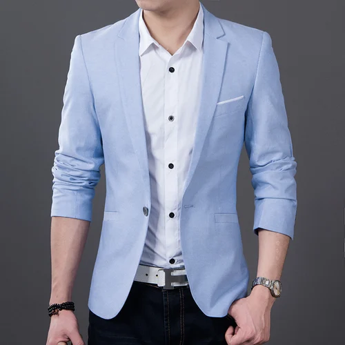

The above picture shows the Men's wear counter of the mall.
In the Men's we are having all styles of wears.
All styles of occasions wear are available.
This is the traditional wear of the men's. |
|
|  |
This is the function wear of the men's. |
|
This is the Party wear of the men's. |